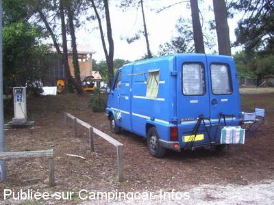

ASN = Aire de services avec stationnement nuit possible de :
LACANAU Lacanau Océan
(N° 759)
Accès/adresse :
Allée des Sauviels
Le Huga
Lacanau Océan
33680 LACANAU
Le Huga
Lacanau Océan
33680 LACANAU
Latitude : (Nord) 45.00584° Décimaux ou 45° 0′ 21′′
Longitude : (Ouest) -1.16528° Décimaux ou -1° 9′ 55′′
Tarif : 2016
Stationnement, services, électricité 24 H de 12 h à 12 h : 13,80 €
Paiement par automate avec carte bancaire
Type de borne : Autre
Services :


Autres informations :
Ouvert du 02/01 au 31/12
125 emplacements
70 places en période hivernale
55 places du 1er juin au 30 septembre sur une seconde petite aire
1 borne électrique, prise d'eau pour 4 C-C
Tél : +33(0)556 032 122
http://www.mairie-lacanau.fr/vivre-a-lacanau/circuler-stationner/499-camping-cars.html
Proche du terrain de la Sécurité Civile à l'héliport
Le 20/08/2011 par olive mimi

Le 04/07/2010 par coco et nath
Le 04/07/2010 par coco et nath

Le 06/08/2007 par welcom16
de
BURBUR
le 09/02/2016 :
je ne suis pas pret de revenir a cette aire.j'ai mis le vehicule sur l'allee centrale pour ne pas m'embourber ,j'etais tous seul sur l'aire.la commune fait payer 13.80euros ,il n'y a aucune securitée la sorte de quille a l'entrée etait abaissée.les voitures se promenent la nuit sur l'aire .j'ai payé avec la carte bleue je n'ai eu aucun reçu.dans cette commune vous payez 13.80 pour l'aire et si vous ne pouvez pas marcher les parkings sont tous payant.
je ne suis pas pret de revenir a cette aire.j'ai mis le vehicule sur l'allee centrale pour ne pas m'embourber ,j'etais tous seul sur l'aire.la commune fait payer 13.80euros ,il n'y a aucune securitée la sorte de quille a l'entrée etait abaissée.les voitures se promenent la nuit sur l'aire .j'ai payé avec la carte bleue je n'ai eu aucun reçu.dans cette commune vous payez 13.80 pour l'aire et si vous ne pouvez pas marcher les parkings sont tous payant.
de
camus
le 08/10/2015 :
De passage fin septembre, surpris par l'état des emplacements couverts de copeaux qui font craindre en cas de pluie. De plus surpris de voir une voiture rentrer en profitant du passage a l'intérieur de l'aire d'un camping car. Les occupants ne pouvant sortir nous demandait notre code. Ne pouvant leur donner, ils sont ressortis tranquillement par un autre passage, n'hésitant pas à nous injurier en passant devant l'aire. A ce prix là, 13,80 e, j'estime que l'aire pourrait etre sécurisée et les stationnements plus stables. En revanche rien à dire concernant les points d'eau et d'éléctricité c'est parfait.
De passage fin septembre, surpris par l'état des emplacements couverts de copeaux qui font craindre en cas de pluie. De plus surpris de voir une voiture rentrer en profitant du passage a l'intérieur de l'aire d'un camping car. Les occupants ne pouvant sortir nous demandait notre code. Ne pouvant leur donner, ils sont ressortis tranquillement par un autre passage, n'hésitant pas à nous injurier en passant devant l'aire. A ce prix là, 13,80 e, j'estime que l'aire pourrait etre sécurisée et les stationnements plus stables. En revanche rien à dire concernant les points d'eau et d'éléctricité c'est parfait.
de
philippedu62
le 26/08/2015 :
de passage fin juillet 2015 , très belle aire situé a 2 km de la plage mais pour si rendre ( piste cyclabe )
un peu de sport avant de faire bronzette
sinon 13 euros la nuitée ( on a déja eu moins chére )
petit bémol les écorces de pin sur le sol sinon rien a redire
de passage fin juillet 2015 , très belle aire situé a 2 km de la plage mais pour si rendre ( piste cyclabe )
un peu de sport avant de faire bronzette
sinon 13 euros la nuitée ( on a déja eu moins chére )
petit bémol les écorces de pin sur le sol sinon rien a redire
de
PR
le 06/08/2015 :
de passage en juillet 2015. aire située à 2 kms de la plage (commerces) de Lacanau océan et de 2 kms du Moutchic (lac et commerces). RAS très calme pour y paseer 2 ou 3 jours avec emplacement assez large, vidange à volonté, électicité...
de passage en juillet 2015. aire située à 2 kms de la plage (commerces) de Lacanau océan et de 2 kms du Moutchic (lac et commerces). RAS très calme pour y paseer 2 ou 3 jours avec emplacement assez large, vidange à volonté, électicité...
de
André Guilmot
le 07/07/2015 :
Ce mercredi 1 juillet, j'ai eu la mauvaise idée de vouloir passer une nuit au parking du Huga à Lacanau. Les places sont soi-disant stabilisées, mais en fait elles ont simplement été recouvertes, il y a quelques années de copeaux de bois. Depuis ceux-ci se sont transformés en poussière très foncée et très meubles. En manoevrant pour me garer, en moins de temps qu'il ne faut pour le dire, j'étais ensablé jusqu'aux essieux. Par mon assurance assistance une dépanneuse est venue me tirer d'affaire. Mais j'ai encore du payer 13,80€ de plus pour pouvoir la faire entrer sur le parking. Merci Monsieur le maire. Je ne crois pas que je retournerai à Lacanau.
Ce mercredi 1 juillet, j'ai eu la mauvaise idée de vouloir passer une nuit au parking du Huga à Lacanau. Les places sont soi-disant stabilisées, mais en fait elles ont simplement été recouvertes, il y a quelques années de copeaux de bois. Depuis ceux-ci se sont transformés en poussière très foncée et très meubles. En manoevrant pour me garer, en moins de temps qu'il ne faut pour le dire, j'étais ensablé jusqu'aux essieux. Par mon assurance assistance une dépanneuse est venue me tirer d'affaire. Mais j'ai encore du payer 13,80€ de plus pour pouvoir la faire entrer sur le parking. Merci Monsieur le maire. Je ne crois pas que je retournerai à Lacanau.
de
d&d du 41
le 04/07/2015 :
Le 25 Juin 2015
Totalement d'accord avec l'avis précédent. Aire loin de tout. La commune veut bien encaisser 13.80 € et je trouve que pour ce prix là, elle pourrait au moins entretenir l'aire de service. Pour notre part, après avoir fait les services, nous avons fait disparaître tous les papiers collés sur les grilles. Il y aura au moins un camping cariste qui aura trouvé l'endroit propre !!!
Le 25 Juin 2015
Totalement d'accord avec l'avis précédent. Aire loin de tout. La commune veut bien encaisser 13.80 € et je trouve que pour ce prix là, elle pourrait au moins entretenir l'aire de service. Pour notre part, après avoir fait les services, nous avons fait disparaître tous les papiers collés sur les grilles. Il y aura au moins un camping cariste qui aura trouvé l'endroit propre !!!
de
pbl
le 28/06/2015 :
Cet endroit ne vaut pas le prix : les emplacements sont très mal stabilisés. Je m'y suis ensablé. Il y des "films" nylon en sous-couche; mais pas partout. Cherchez l'erreur! Les 2 endroits de "dépotage" sont très mal conçus. On doit vider les toilettes sur la grille des EU. Quelle horreur! Les robinets EP sont quasi tous cassés. Comment faire le plein et nettoyer? Certains vident leur cassette sous ces robinets. Surtout ne pas essayer d'y prendre de l'eau. Je n'y reviendrai jamais.
Cet endroit ne vaut pas le prix : les emplacements sont très mal stabilisés. Je m'y suis ensablé. Il y des "films" nylon en sous-couche; mais pas partout. Cherchez l'erreur! Les 2 endroits de "dépotage" sont très mal conçus. On doit vider les toilettes sur la grille des EU. Quelle horreur! Les robinets EP sont quasi tous cassés. Comment faire le plein et nettoyer? Certains vident leur cassette sous ces robinets. Surtout ne pas essayer d'y prendre de l'eau. Je n'y reviendrai jamais.
de
domiphoto
le 31/08/2014 :
De passage les 22, 23 24 et 25 août : aire propre sympa, des arbres et des emplacements corrects. Tarif 13€ par jour avec eau électricité, vidanges cassette. Pendant notre séjour, la borne était en panne, la police municipale est passée pour encaisser les 13,80 €
De passage les 22, 23 24 et 25 août : aire propre sympa, des arbres et des emplacements corrects. Tarif 13€ par jour avec eau électricité, vidanges cassette. Pendant notre séjour, la borne était en panne, la police municipale est passée pour encaisser les 13,80 €
de
Jepila
le 20/05/2014 :
Séjour du dimanche 18 au lundi 19 mai.
Aire A : pas en service
Aire B : pas de barrière (doit être remplacée par une borme mobile), l'accès est donc libre mais il faut payer par carte 13.80 euros à une borne à l'exterieur, la police municipale passe vérifier et encaisser.
L'accès est facile, les emplacements plus ou moins ombragés, c'est plutôt bien fait et agréable du moins quand il n'y a pas trop de monde, double aire de services impeccable.
Situation sympa le long de la piste cyclable dans les pins avec tout un réseau cyclable à disposition 3 km de la station balnéaire, vélos obligatoires pour s'y rendre mais petits commerces d'épicerie à proximité immédiate.
Inconvénients : la proximité relative de la route, les aiguilles de pins au sol et les pommes de pins en l'air... et le prix, mais bon...
En bref... impeccable pour des p'tis week end hors saison (j'habite Bordeaux).
Séjour du dimanche 18 au lundi 19 mai.
Aire A : pas en service
Aire B : pas de barrière (doit être remplacée par une borme mobile), l'accès est donc libre mais il faut payer par carte 13.80 euros à une borne à l'exterieur, la police municipale passe vérifier et encaisser.
L'accès est facile, les emplacements plus ou moins ombragés, c'est plutôt bien fait et agréable du moins quand il n'y a pas trop de monde, double aire de services impeccable.
Situation sympa le long de la piste cyclable dans les pins avec tout un réseau cyclable à disposition 3 km de la station balnéaire, vélos obligatoires pour s'y rendre mais petits commerces d'épicerie à proximité immédiate.
Inconvénients : la proximité relative de la route, les aiguilles de pins au sol et les pommes de pins en l'air... et le prix, mais bon...
En bref... impeccable pour des p'tis week end hors saison (j'habite Bordeaux).
de
clau
le 26/04/2014 :
§
Passés à Pâques 2014 (du 16 au 21 Avril): aire B gratuite avec eau et électricité car la barrière de l'aire A était en réparation. Sinon, 13€ la nuitée, moins cher que le camping (18€) mais quand même.
§
Passés à Pâques 2014 (du 16 au 21 Avril): aire B gratuite avec eau et électricité car la barrière de l'aire A était en réparation. Sinon, 13€ la nuitée, moins cher que le camping (18€) mais quand même.
de
lufloarsa
le 28/05/2013 :
Aire située à la sortie de Lacanau Océan - vélo ou bon marcheur - 2kms5
Sol désagréable surtout en temps de pluie
13.50 €
Pour nous l'aire de Carcans sur la base nautique était fermée jusqu'au mois de juin
Aire située à la sortie de Lacanau Océan - vélo ou bon marcheur - 2kms5
Sol désagréable surtout en temps de pluie
13.50 €
Pour nous l'aire de Carcans sur la base nautique était fermée jusqu'au mois de juin
de
Bernard
le 31/03/2013 :
§ Attention cette aire est affichée à 13 euros alors qu'elle nous débite 13,50 euros sur votre ticket. Procédé pas très légal à mon avis, signalé à la mairie.
Loin de tout commerces ou de la place (il faut un vélo ou de bonnes jambes) - en plus le sol est infecte quand il pleut, car les morceaux d'écorces collent aux chaussures.
La commune de Lacanau ferait bien de prendre exemple sur celle de Carcan qui est superbe et qui ne facture que 5 euros + 2 euros si on veut l'EDF pour 24 h. Cette dernière aire comptait lorsque nous sommes passés le 27 mars une vingtaine de camping-cars alors que celle de Lacanau n'en avait que 5 !!!
Il n'y a pas photo question prix et accueil car à Carcan nous avons l'accueil et le port avec les restaurants a proximité.
§ Attention cette aire est affichée à 13 euros alors qu'elle nous débite 13,50 euros sur votre ticket. Procédé pas très légal à mon avis, signalé à la mairie.
Loin de tout commerces ou de la place (il faut un vélo ou de bonnes jambes) - en plus le sol est infecte quand il pleut, car les morceaux d'écorces collent aux chaussures.
La commune de Lacanau ferait bien de prendre exemple sur celle de Carcan qui est superbe et qui ne facture que 5 euros + 2 euros si on veut l'EDF pour 24 h. Cette dernière aire comptait lorsque nous sommes passés le 27 mars une vingtaine de camping-cars alors que celle de Lacanau n'en avait que 5 !!!
Il n'y a pas photo question prix et accueil car à Carcan nous avons l'accueil et le port avec les restaurants a proximité.
de
laurent
le 01/09/2012 :
Aire agréable et abordable (campings hors de prix à Lacanau Océan).
Emplacements spacieux et propres (écorces).
Proximité immédiate de la magnifique piste cyclable qui permet d'aller d'un côté à la mer et de l'autre au lac.
Dommage que le système de places réservées pendant 24 heures même au départ du ccar oblige à attendre parfois longtemps devant l'horodateur qu'une place se libère.
Aire agréable et abordable (campings hors de prix à Lacanau Océan).
Emplacements spacieux et propres (écorces).
Proximité immédiate de la magnifique piste cyclable qui permet d'aller d'un côté à la mer et de l'autre au lac.
Dommage que le système de places réservées pendant 24 heures même au départ du ccar oblige à attendre parfois longtemps devant l'horodateur qu'une place se libère.
de
kat
le 30/08/2012 :
de passage fin aout les points de vidange et d'évacuation étaient sales et bouchées.
Le sol est salissant et certains camping car s'embourbent.
Calme malgré les hélicoptères de jour ou de nuit.
A 2.5 km de la plage donc vélo obligatoire.
de passage fin aout les points de vidange et d'évacuation étaient sales et bouchées.
Le sol est salissant et certains camping car s'embourbent.
Calme malgré les hélicoptères de jour ou de nuit.
A 2.5 km de la plage donc vélo obligatoire.